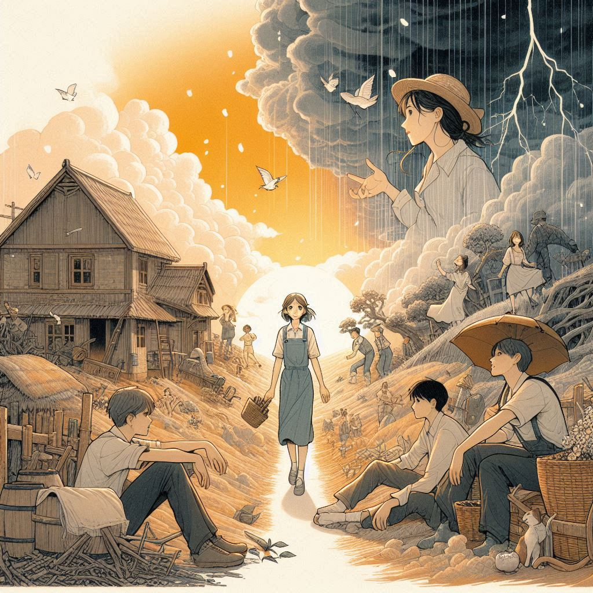

작가
황순원
출판 연도
1952년
감상평에 대한 AI그림
이 소설은 시골 소년과 도시 소녀의 순수한 사랑 이야기로 시작된다. 서로 점점 가까워지며 따뜻한 감정을 쌓아가던 두 사람은
어느 날 함께 소나기를 맞게 된다. 하지만 그 순간이 행복의 절정이자 비극의 시작이었을 줄은 몰랐다.
소녀가 병에 걸려 갑작스럽게 세상을 떠나는 장면은 너무나 충격적이었고, 이별의 사실을 모른 채 그녀를 만날 날을 기다릴 소년의 모습이 가슴을 먹먹하게 했다.
뒤늦게 소녀의 죽음을 알게 된 소년의 절망과 상실감이 처절하게 전해져, 읽는 내내 슬픔과 안타까움이 밀려왔다.
이처럼 한순간의 비극이 모든 것을 바꿔버리는 전개가 깊은 여운을 남겼다.

감상평에 대한 AI평가
~~~~AI평가~~~~~
✨ 서정적인 흐름 속에서 감정의 고조와 비극적 결말이 단계적으로 전개되며, 독자가 자연스럽게 몰입할 수 있도록 구성되어 있다.
✨ 처음의 따뜻한 설렘에서 극적인 충격과 깊은 절망으로 변화하는 감정이 강렬하게 묘사되어 있으며, 소년의 상실감이 마치 현실처럼 생생하게 다가온다.
✨ 단순한 줄거리 요약을 넘어, 작품 속 인물들의 감정을 온전히 함께 느끼려는 태도가 돋보이며, 슬픔과 안타까움이 진솔하게 녹아 있다.
마치 한 편의 비극적인 영화처럼, 행복과 비극이 교차하는 운명의 장면들을 강렬하게 담아낸 감상평으로, 독자에게도 깊은 여운과 감정적 울림을 남긴다.